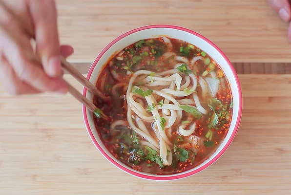

Go back to recipes list
Hand Pulled Noodles Recipe

This is a recipe to prepare Hand Pulled Noodles
Ingredients:
- 8 cups all-purpose flour
- 2 ½ cups water
- ¼ cup vegetable oil
Steps:
- Place flour in a large bowl and gradually mix in water. Mix until dough comes together; knead until smooth, 15 to 20 minutes. Cover with plastic wrap and let rest for 15 minutes.
- Knead dough again for 2 minutes; cover and let rest for 15 minutes.
- Knead dough one more time for 2 minutes. Divide into 4 equal pieces. Roll each piece into a 3/8-inch-thick sheet. Brush both sides of each sheet with oil. Stack sheet together; cover with plastic wrap and let rest for 10 to 15 minutes.
- Fill a large saucepan with water and bring to the boil.
- Place one sheet of dough on a cutting board and slice into 1/8-inch-wide strips. Take one end of a strip in each hand and stretch it until it is 30 to 35 inches long. Fold it in thirds and stretch again to the same length; shake and slap against the counter several times to lengthen it to 2 to 3 yards. Drop it into the boiling water. Add 2 to 3 more strips of noodles to the boiling water; cook until tender, 5 to 10 minutes. Transfer drained noodles to a serving bowl.
- Repeat with remaining sheets of dough.
Editorial Note:
Be warned: This is a difficult recipe to make. It takes a lot of experience as you need to know what the dough texture should feel like for each major phase of the noodle making.
Nutrition Facts
Per Serving:
412 calories; protein 10.3g; carbohydrates 76.3g; fat 6.4g; sodium 3.8mg. Full Nutrition